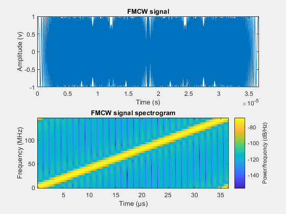
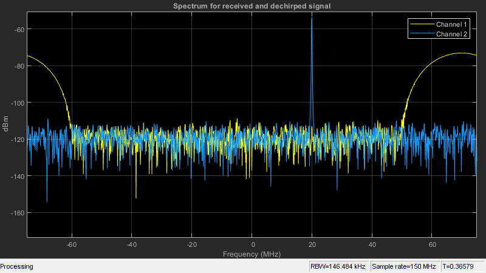
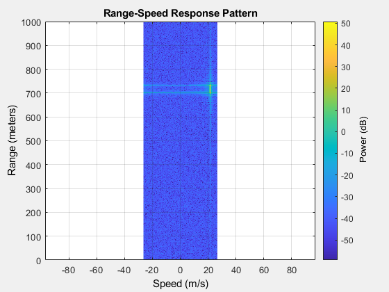

Contents
Definizione dei parametri
fc = 77e9;
c = 3e8;
lambda = c/fc;
range_max = 1000
tm = 5.5*range2time(range_max,c);
range_res = 1;
bw = rangeres2bw(range_res,c);
sweep_slope = bw/tm;
fr_max = range2beat(range_max,sweep_slope,c);
v_max_kmh = 350
v_max = v_max_kmh*1000/3600;
fd_max = speed2dop(2*v_max,lambda);
fb_max = fr_max+fd_max;
fs = max(2*fb_max,bw);
range_max =
1000
v_max_kmh =
350
Simulazione della forma d'onda FMCW
waveform = phased.FMCWWaveform('SweepTime',tm,'SweepBandwidth',bw,...
'SampleRate',fs);
sig = waveform();
subplot(211); plot(0:1/fs:tm-1/fs,real(sig));
xlabel('Time (s)'); ylabel('Amplitude (v)');
title('FMCW signal'); axis tight;
subplot(212); spectrogram(sig,32,16,32,fs,'yaxis');
title('FMCW signal spectrogram');

Costruzione del modello dell'oggetto da individuare
obj_dist = 700
obj_speed_kmh = 300
obj_speed = obj_speed_kmh*1000/3600;
obj_rcs = db2pow(min(10*log10(obj_dist)+5,20));
objtarget = phased.RadarTarget('MeanRCS',obj_rcs,'PropagationSpeed',c,...
'OperatingFrequency',fc);
objmotion = phased.Platform('InitialPosition',[obj_dist;0;0.5],...
'Velocity',[obj_speed;0;0]);
channel = phased.FreeSpace('PropagationSpeed',c,...
'OperatingFrequency',fc,'SampleRate',fs,'TwoWayPropagation',true);
obj_dist =
700
obj_speed_kmh =
300
Setup sistema radar FMCW
ant_aperture = 6.06e-2;
ant_gain = aperture2gain(ant_aperture,lambda);
tx_ppower = db2pow(5)*1e-3;
tx_gain = 9+ant_gain;
rx_gain = 15+ant_gain;
rx_nf = 4.5;
transmitter = phased.Transmitter('PeakPower',tx_ppower,'Gain',tx_gain);
receiver = phased.ReceiverPreamp('Gain',rx_gain,'NoiseFigure',rx_nf,...
'SampleRate',fs);
radar_speed_kmh = 5
radar_speed = -radar_speed_kmh*1000/3600;
radarmotion = phased.Platform('InitialPosition',[0;0;0.5],...
'Velocity',[radar_speed;0;0]);
radar_speed_kmh =
5
Simulazione sistema radar
specanalyzer = dsp.SpectrumAnalyzer('SampleRate',fs,...
'PlotAsTwoSidedSpectrum',true,...
'Title','Spectrum for received and dechirped signal',...
'ShowLegend',true);
rng(2012);
Nsweep = 10000;
xr = complex(zeros(waveform.SampleRate*waveform.SweepTime,Nsweep));
for m = 1:Nsweep
[radar_pos,radar_vel] = radarmotion(waveform.SweepTime);
[tgt_pos,tgt_vel] = objmotion(waveform.SweepTime);
sig = waveform();
txsig = transmitter(sig);
txsig = channel(txsig,radar_pos,tgt_pos,radar_vel,tgt_vel);
txsig = objtarget(txsig);
txsig = receiver(txsig);
dechirpsig = dechirp(txsig,sig);
specanalyzer([txsig dechirpsig]);
xr(:,m) = dechirpsig;
end

Stima distanza oggetto in movimento
rngdopresp = phased.RangeDopplerResponse('PropagationSpeed',c,...
'DopplerOutput','Speed','OperatingFrequency',fc,'SampleRate',fs,...
'RangeMethod','FFT','SweepSlope',sweep_slope,...
'RangeFFTLengthSource','Property','RangeFFTLength',2048,...
'DopplerFFTLengthSource','Property','DopplerFFTLength',256);
clf;
plotResponse(rngdopresp,xr);
axis([-v_max v_max 0 range_max])
clim = caxis;
Dn = fix(fs/(2*fb_max));
for m = size(xr,2):-1:1
xr_d(:,m) = decimate(xr(:,m),Dn,'FIR');
end
fs_d = fs/Dn;
fb_rng = rootmusic(pulsint(xr_d,'coherent'),1,fs_d);
rng_est = beat2range(fb_rng,sweep_slope,c)
rng_est =
636.2822
